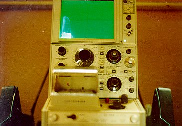
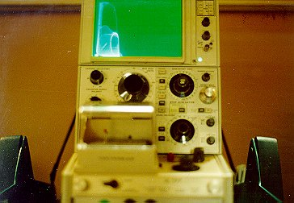
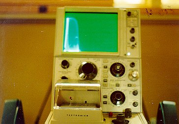
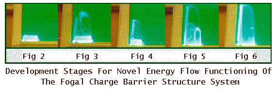
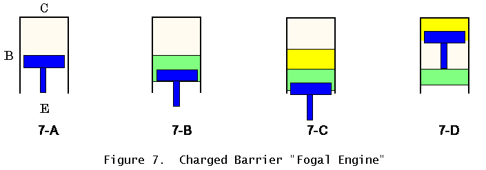

The Truth Behind Charged Barrier Technology
Copyright © 1997 Bill Fogal
With Special Commentary and Analysis by
Colonel Tom Bearden
(Retired U.S. Military Officer, Nuclear Physicist)
Introduction
"We are only bound by the limits of our own imagination." We perceive what we cannot see. We feel what we cannot hear. We strive for perfection in our thought models, but we seem to forget that sometimes it is the imperfections in nature that can help to make things work.1
This paper covers a new way of thinking in solid state physics. Now one seeks to utilize and tame pure energy flow rather than just broadly dissipating the collected energy by means of electron current flow. The paper also looks at some of the ideas and theories that make up our world. The Fogal semiconductor -- which is an experimentally demonstrated device -- may force us to ask some unique questions about conventional EM theories and wonder, "Do things really work that way? Could they work differently after all?"
We particularly caution the reader against simply assuming normal EM theory, either classical or quantal, as having the "final answers." The topology of these models has been severely and arbitrarily reduced. If one looks at circuits in a higher topology algebra, many operations are possible, though excluded from present tensor analysis.2
Energy Flows Continuously from Magnetic and Electric Charges
Have you ever taken two magnets and held one magnet in each hand, with the magnets facing each other with the same poles? As you bring the magnets close to each other, you can feel the repulsion and the build-up of the "energy field" as the magnets begin to push your hands away from each other. Each of the magnetic poles is pouring forth hidden energy3 that acts upon the other pole, producing the force that you feel.
That energy is continuously flowing from the magnets, 4, 5, 6 and fills the entire space around them, literally to the ends of the universe. The electron7 also has such a flowing energy field, and electrons will react just like the magnets under certain conditions. When two like charges approach each other, their streams of energy impact one upon the other, and produce
Now if we could only collect and use the energy from the flowing energy field directly, further down the circuit, and not move the repelling electrons themselves! In that case our constrained electrons would continue to be an inexhaustible source of that energy flow, and we could collect and use the excess energy from them, without draining away the source by allowing electron current flow from it.
And there'd be another great advantage: We would also rid ourselves of most of the electron collision noise, that is created in the lattice by the longitudinal movement of the electrons as ordinary current. In other words, we could simply use the direct energy flow changes caused by our signal modulations, without adding lots of little unwanted and spurious field changes due to those electron collisions. This notion is simple: Use field energy flow to bypass the blocked electron flow, and you bypass much of the noise in the intervening transmission line and associated circuits.
Some Simply Addressed But Advanced Content
To fully comprehend some of the content of this paper, a fairly extensive knowledge of quantum solid state physics is helpful. Even then, using the tantalum electrolytic capacitive material to form and sustain spin density waves at room temperature, and forming an EM field by moving and overlapping the energy states of compressed electrons, appear to be new areas in solid state physics. This paper will also explain why the AC Josephson tunnel junction effect can be developed at room temperature in the charged barrier device, and how and why the AC supercurrent can also be developed at room temperature.11
Design, Components, and Functions
Let's Take a Look at the Basic Design
The simplified schematic of the hybrid charged barrier semiconductor is shown here in Figure 1:
The device has an electrolytic capacitor and a parallel resistor attached to the emitter junction of a bipolar transistor. Such a circuit configuration has been known in textbook theory as a bypass element and the capacitor in the circuit configuration will react to frequency to lower the emitter resistance and create gain. However, there is one interesting point to consider. I have been granted two U.S. Patents on the same circuit configuration, using an electrolytic capacitor to form a unitary structure. Under certain conditions, electrolytic capacitors react differently in this type of circuit configuration than a standard non-electrolytic bypass capacitor.
I use the electrolytic capacitor to create a unique electromagnetic field. The parallel resistor is used to "bleed-off" excess charge potential from the plate of the capacitor to generate the electromagnetic field. It also performs another function we will detail later. The exact values of the capacitive element and resistive element are not listed at this time.
Let's Look at Capacitors
In theory, a simple capacitor will pass an AC signal and voltage and block a DC voltage from crossing the plate area. However, a physical capacitor is not necessarily simple; instead, it is a complicated system having many internal functions. An electrolytic capacitor will pass an AC signal and voltage, and also hold a DC charge -- with its accompanying DC potential -- on the plate area of the capacitor.12 If an electrolytic capacitor can hold a DC charge potential on the plate area, then one can move small portions of that charge potential and that charge, with the use of a parallel bleed-off resistor. This small bleed-off current and change of E-field will create a very small, associated magnetic field on the plate area of the capacitor. Through experimentation it has been found that this very small electromagnetic field will oscillate at a very high frequency that is not detected under normal test conditions.13
Conventional theory has shown that one needs to have a movement of the charge state to generate current to create a magnetic field.14 However, theory does not tell the exact amount of current needed to create the fiel d. Could the bleed-off effect from a parallel resistor element change enough of the charge state to sustain a very small EM field? The resistor element would have to have just the right specific value in order to bleed-off just enough excess charge potential, so that the charge state between the plate of the capacitive element and the resistor bleed-off would not reach a point of equilibrium (equalization) between the charge states.
Scope Traces
At the point of charge, with no signal applied, and with a bias of the junction, the capacitive element will charge to the voltage potential of 250 mV DC at the emitter junction. The parallel resistor element will work to "bleed-off" excess charge from the capacitor plate area, and try to reach a point of equalization of the charge state. However, the associated field will oscillate at a frequency around 500 MHz and will not reach a point of total equalization due to this high frequency oscillation. In other words, equilibrium does not occur.15
Formation of Electromagnetic Field
 Figure 2. |
The formation of the electromagnetic field is shown in Figure 2, which is a photograph from a Tektronix transistor curve tracer operating in the microamp region. A reading of the DC operating voltage of the emitter junction of the transistor will not show a change in the voltage potential due to the high frequency oscillation of the electromagnetic field. At this point, the emitter electrons become trapped and pinned within the electromagnetic field of the capacitor. This pinning blocks current and dampens the amount of electron collision noise and heat due to electron interaction.16 |
Charge-Blocking and Formation of the AC Supercurrent
 Figure 3. |
The photograph in Figure 3 is taken from the Tektronix transistor curve tracer operating in the microamp region. At the point of a small signal injection to the base region of the transistor, the effect of the AC carrier disruption to the internal DC emitter junction electromagnetic field can clearly be seen. This effect is caused by the Overpotential of Charge State and the compression of the pinned electron clusters within the DC charged electromagnetic field developed by the capacitor. At this point in device conduction, the parallel resistor element will try to equalize the field charge, and align the pinned electron clusters in the charged field on the capacitor plate. The E-field will start to develop along with its associated Poynting energy density flow (S-flow).17 |
Formation of the AC Supercurrent
|  Figure 4. |
The photograph in Figure 4, taken from the Tektronix transistor curve tracer, shows the effect to "disruption and compression of the pinned electron clusters." At this point in time, in the semiconductor the parallel resistor element can no longer handle the bleed-off of excess charge potential from the charged plate of the capacitor, due to the compression of electrons and the consequent rapid formation of an E-field. So there is a buildup of the Poynting energy density flow due to the change in electron energy state and compression of charge clusters. A spin density wave will develop and increase within the tantalum capacitor.18 |
Discharge of the AC Supercurrent
|  Figure 5. |
The photograph in Figure 5, again taken from the Tektronix transistor curve tracer, shows almost the full development of the AC supercurrent, due to the Poynting energy density flow and the increased spin density wave action of the tantalum capacitor. The development of the E-field is almost complete. The emitter junction DC electromagnetic field is about to collapse and release the AC supercurrent as well as the flow of Poynting energy density. The AC supercurrent is too massive and the increased nature of the spin density wave of the tantalum element is too fast, due to the buildup of the E-field, for the bleed-off resistor to effectively regulate and shut down the action.19 |
Poynting Energy Flow
|  Figure 6. | Taken from the Tektronix transistor curve tracer, the photograph in Figure 6 shows the point of discharge and the Poynting energy density flow, the AC supercurrent, and the collapse of the DC charged electromagnetic field, due to the change of energy state on the plate of the tantalum capacitor. Most of the device conduction is a Poynting energy density flow across the doped regions of the device's crystal lattice. With a dramatic decrease in electron collisions, the S-flow now is not subject to distortions due to the material defects within the lattice structure. Device switching times are far faster (at optical speed) and there are few if any limitations on frequency response. |
The phenomenal frequency response -- up to essentially the optical region -- follows, since the shortest frequency wavelengths can be passed directly as Poynting energy density flow.20 Without divergence or scattering of this energy flow, there is no "work" being done in the conventional sense on the non-translating electrons in that region, even though they are potentialized. That is, electron transport has been halted temporarily or dramatically reduced, while the Poynting flow continues apace. With most electrons not being translated longitudinally, there is no heat build-up in the device as there is with lattice vibration interactions with a normal electron current.21 This device can work as a charge coupled device22 with the ability to pass both voltage and Poynting current flow S rather than conduction electron current flow dq/dt.23

Researching Charge and Poynting Flow in Circuits
Tom Bearden is a very good friend of mine in Huntsville, Alabama. Tom has been deeply involved in research for a number of years to explain and define the charge state in physics. He has taken a serious look at the flow of Poynting energy in circuits,24 and how most circuit analysis focuses on the power (rate of dissipation of the energy flow) in circuits rather than on the actual rate of energy transport flow (which is not power at all, if it is not dissipated). Tom can explain the basic theory for formation of the charge state25 and he can explain the Poynting energy flow used in my charged barrier technology.26 The reader is referred to the extensive endnote comments added by him. Over the last few years it has been a real pleasure to exchange ideas with him.
Remember the Magnets
Tantalum is one of the elements that is used in the construction of the charged barrier device, as well as the "parallel resistor element." Under certain conditions, when stimulated with a very small electric current to align the charge state, the excess bleed-off effect due to the parallel resistor can move the charge state on the capacitor and develop a very small electromagnetic field. Electrons are "held" and "pinned" within this field to reduce electron lattice interaction within the emitter junction.
With the influence of the AC conduction electrons reacting with the pinned electrons within the charged field, a unique effect will start to happen: The clusters of bound electrons within the charged field are compressed to a point where there is a "change of energy state" within the compressed, bound electrons in the tantalum lattice. This will start the formation of the E-field due to the interaction of the compressed electron clusters with the influence of the AC conduction electrons. Remember the magnets when their like poles were brought within close proximity to each other? An analogous action will start the formation of the AC supercurrent and the Poynting energy flow within the device.27
Charged Barrier Fogal Engine
Putting together all the actions we have discussed, we may compare the electromagnetic actions as the actions of a special kind of engine cycling, as shown in Figure 7.

In Figure 7, we show four analogous actions involved in the "Fogal engine". Figure 7A shows the start of the "down stroke" of the Fogal emitter piston, so to speak, and the formation of the DC electromagnetic field. Figure 7B shows the signal injection into the cylinder from the injector base region, as the emitter piston pulls the signal into the chamber. Figure 7C shows the compression of electron density and the formation of the amplified E-field due to the charge compression, with a resulting expansion of the Poynting energy density flow. Figure 7D shows the point of discharge of the Poynting energy density flow, the resulting AC supercurrent, and the collapse of the DC electromagnetic field of the emitter piston.
Testing the Fogal Charged Barrier Semiconductor
Device Testing Parameters for Tektronix
Now that you have seen the pictures of the formation of the internal DC electromagnetic field and the development of the AC supercurrent, I will explain how to test this device. The Charged Barrier device has certain testing parameters that have to be followed to test it accurately. The device must be operated within certain parameters to maintain the internal electromagnetic field action. Tests have to be constructed on the Tektronix transistor curve tracer in the microamp range of operation, in order to keep from saturating the internal electromagnetic field. Important: The Charged Barrier prototype device will test and look like a normal transistor when tested or operated outside of its specified operating parameters!
In the tests, the testing parameters on the Tektronix were set up as follows: The collector current was set at 20 µA per division. The base current was set at 0.1 µA with signal injection to the base region. The supply voltage was set at 10 V DC per division. The signal injection was 100,000 kHz (100 MHz) at a level of less than 100 µV AC. Important: This device cannot be tested on the Tektronix curve tracer equipment in the milliamp range of operation for a normal transistor. Testing it in the milliamp range will overload and shut down the internal electromagnetic field developed by the electrolytic capacitor. The prototype device will then test and look like any normal transistor, with similar noise figure, gain, and frequency range. The "new effects" only occur at the proper microamp range as specified, and only then does one obtain in the Fogal transistor the dramatic noise reduction, increase in sensitivity, increased gain, and increased frequency response as well as "optical" type functioning due to the blocking of dq/dt current flow and the increase in Poynting energy density flow.
Circuit Testing the Device
The Fogal Charge Barrier transistor can be tested under normal circuit conditions with a 3 V DC supply voltage and a bias to the base-emitter junction of 0.7V DC with the emitter grounded. A normal transistor under these conditions will turn on and conduct with an input to the base region of 4.5 mV AC at 0.1 µA AC, and produce a gain at the collector junction of 20 mV AC with 0.1 µA of current. Under the same circuit conditions, the Charged Barrier device with a signal injection of 200 µV AC at 0.1 µA to the base region, will produce 450 mV AC and an AC current of 133 µA AC at the collector junction. A large signal injection to the base region of the Charged Barrier device will overload and shut down the internal electromagnetic field and the device will test just like a normal transistor, until a point of device saturation is reached where the device will pass large amounts of current without a noticeable change in device temperature.28 The device can easily be used in existing equipment for signal processing applications to process and reduce the noise content of signals.
Device Wave Function
Though not in conventional theory, signal waves actually travel in wave pairs, 29, 30 each pair containing the familiar wave and an associated "hidden" antiwave. The two waves of the pair have the same frequency. Current semiconductor technology cannot separate these wave pairs, due to limitations in switching time.31 The Charged Barrier device can switch at a sufficiently fast rate to:
Some Foreseeable Applications
Charged Barrier Applications
Prototype Charged Barrier devices have been tested in video equipment to process composite video images for a higher resolution. The device has the ability to process and separate the wave pairs and define the "polarization" of light from background objects. This ability can produce a high definition image on a CRT, and a near-holographic image on liquid crystal display panels. The clarity of liquid crystal display panels can be greatly improved by the switching speed of the Charged Barrier technology, with the visual improvement sometimes being startling.
Novel Encryption and Transmission Capability
A preliminary test was constructed in Huntsville, Alabama in May of 1996 to determine if video information could be infolded within a DC voltage potential and transmitted across a wired medium.33 Live video information at 30 frames per second was processed and converted by full wave rectification into a DC potential at a voltage of 1.6 V DC and connected to a twisted pair wire medium of 2,000 feet in length. As a voltage, the 5 MHz video information rectified to DC potential had no modulation or AC signal present that could be detected by sensitive signal processing equipment. The analog oscilloscopes that were used to monitor the transmission could only see the DC voltage flat line, although the best digital storage scope could see very weak signal residues because of slightly less than 100% filtering. I later performed additional tests with increased filtering, so that the residues could not be seen. These tests were constructed to see if video information could be "infolded" into an audio carrier and transmitted across an ELF frequency transmission source for communication with submarines, or down a 2,000 ft twisted wire pair. The Charged Barrier device was able to process the hidden video, due to the ability of the device to sense the infolded AC electromagnetic wave information hidden inside the rectified DC voltage, sensed as a disruption to the internal DC electromagnetic field of the Charged Barrier device. Using the Fogal semiconductor, a good video image was shown on the monitor at the end of the wired medium. The Huntsville test was considered encouraging. As stated, I have since repeated the test with a better buildup, to eliminate the very weak signal residues, and the effects are real and replicable. Use of the "infolded" EM waves in an ELF carrier for video frequency signaling is real.
A novel effect uncovered in the Huntsville tests was that, by adjusting the gain control of the receiving box containing the charged barrier device, the focused field of view of the fixed image could be varied, even though no adjustment at all was made in the video camera's stationary focusing. This showed that the "internal information" in an image actually contains everything needed to scan a fixed volume of space, forward and backward in radial distance, in a focused manner. The internal information seems to contain information on the entire volume of view of the camera.34 And it is possible to scan that volume, from a seemingly "fixed" image where much of the image is "out of the camera-focused field of view). The implications for photo analysis are obvious and profound.
The Charged Barrier device, once precision prototypes are available, can be utilized to encode signals within signals, similar to wavelet technology, or within voltage. Transmissions of such infolded signals could not be detected by conventional signal processing equipment without first being processed by a Charged Barrier device. Without the need for fiber optic cable, conventional wired telephone or cable networks and high voltage AC transmission lines could be used as a transmission source without the need for line amplifiers or noise cancellation equipment. There would be essentially no bandwidth limitations, once the technology is developed.
Future Charged Barrier Applications
Existing radar technology can be refined and improved with the Charged Barrier device. One of the most complex problems in the industry is the "noise content" in signal processing. The Charged Barrier device can be used as a front end low noise amplifier and increase the sensitivity of the target signature scan capability. Radar imaging could be greatly improved simply by processing the return image with the Charged Barrier device for high resolution CRTs and liquid crystal display panels. Systems could also be improved for faster targeting and return echo due to the optical speed of the Charged Barrier device switching. By utilizing the "internal" information, it should be possible to develop improved imaging for sonar applications, so there will be no gaps in the frequency spectrum. The ability to "get at" and detect the hidden internal EM information of an object from its surface reflection, is an innate capability of the Charged Barrier device that needs to be explored. It is already well-known that the entire interior of a dielectric participates in the reflection of light from it; the information on the interior of the reflecting object is in the reflected image, but in the form of hidden EM variables.
New Type of Radar and Sonar Imaging Application
A new type of "volume viewing" radar system can be constructed with the Charged Barrier Technology that can scan the "inner EM signal image" produced over a given area or volume, sensing disruptions within the earth's magnetic field. The movement through that volume of an object -- such as a low-flying aircraft made of metal or epoxy resin skin design -- can be detected and tracked, regardless of electronic countermeasures and atmospheric disruptions such as tornadoes, hurricanes, or windshear due to microbursts, without the need for target echo return capability. The Charged Barrier device can sense and amplify very small disruptions to the "internal" electromagnetic fields and create an image for identification. The volume can be scanned "in focus" back and forth in distance.
For sound direction and distance sensing, the pinna (small folds) of the outer ear use phase reflection information more than 40 dB below the primary sound signal that strikes the eardrum.35 Any target's nonlinearities and defects, regardless of overall reflective angle and reflective sonar signals, also produce such minute, hidden "pinna" phase reflections and disturbances in:
Adaptation of Such "Radars" to Specialized Sensing
If sufficient of the "pinna" signals can be detected and utilized, a totally new method of internal target identification and discrimination -- as well as typing and identification of the internal warhead(s) and other components on board the target -- could be developed using the Charged Barrier technology. From the pinna signals, decoys and ECM-generated "false returns" could readily be discriminated from the real targets.
Specialized detection devices for airports could be developed that would utilize the pinna information to easily and cheaply detect and identify the contents of packages, luggage, etc. This would provide enhanced security against terrorist bombs, weapons, drug smuggling, etc.
Of particular usefulness would be the development of "pinna scanning" sensors which could peer beneath the ground's surface, detecting mines, tunnels, etc. Identification and classification of the detected subterranean objects and their interior contents is also foreseeable.
Induction of Forces and Patterns of Forces In Atomic Nuclei
A force-free (gradient-free) scalar potential readily penetrates the electron shells of the atom, penetrating directly to the nucleus and interacting with it. By infolding desired E-fields and B-fields inside the scalar potential (inside pure DC voltage), one can insert desired electromagnetic forces -- and control their magnitude, direction, frequency, and duration -- directly inside an atomic nucleus. At least in theory, by sustaining and manipulating these forces in the nucleus, the atomic nucleus itself is subject to direct manipulation and engineering, as contrasted to the present practice of "firing in a bullet" such as a neutron to get through the electron shell barriers and produce limited nuclear effects. It may be that eventually such an electromagnetic nucleus-engineering approach, made possible by Charged Barrier technology, can be utilized to render harmless the steadily accumulating radioactive wastes around the world.
Reduction of Drag on Vehicle Skins
Another application also looms for the use of the charged barrier technology. This application is for the reduction of the drag of the medium on vehicle skins. My preliminary tests on model boats in water have demonstrated the effect to exist and operate, though more definitive tests are called for.
Basically the molecules or atoms of the medium, in contact with the skin of a moving vehicle, create a boundary layer of dense matter which exerts frictional drag forces on the skin to retard the forward movement. Because of the use of phase conjugation and Poynting flow, rather than pure current dq/dt flow, the charged barrier technology can be used to charge the skin of the vehicle in a peculiar fashion. The tiny nonlinearities of the skin become pumped phase conjugate mirrors (considering the internal electromagnetics of the static charge, where the hidden biwaves comprise the pumping). Let us consider such a charged skin as now containing a series of pumped phase conjugate mirrors (PPCMs). The incoming atoms or molecules of the medium comprising the boundary layer do possess asymmetrical charge volumes, and so they produce "signal wave" inputs to the PPCMs as they come in. With a good charge on the PPCMs, their hidden biwave pumping is substantial. Consequently the PPCMs emit highly amplified antisignals -- phase conjugate replica waves (PCRs). By the distortion correction theorem, these highly amplified antiwaves backtrack precisely to the incoming asymmetric charges, where they interact to produce force fields that repel them.36 The point is, there is no recoil on a pumped phase conjugate mirror (PPCM), when it emits such a highly amplified PCR. This is already a theoretical and experimental fact in nonlinear optics. So there is no consequent Newtonian third law recoil force back on the PPCMs comprising the skin of the vehicle.
In short, one has produced a deliberate "pinpoint, repelling force field" upon each of the incoming atoms and molecules of the medium, without any matching recoil force upon the moving vehicle. Better, all the energy in the force field is concentrated only upon the targets, rather than distributed uniformly in space along wavefronts. The end result is to dramatically reduce or lower the boundary layer, without any drag force reaction being exerted upon the vehicle by that operation. This significantly reduces the skin drag and increases the speed of the vehicle through the medium, for a given on-board propulsion force.
Application of this new kind of "smart skin" technology is straightforward. It should allow ships that increase (even double) their velocity through water for the same expenditure of propeller energy. It should enable super-fast torpedoes, perhaps in the 200 to 300 nautical miles per hour range.
Extended Application of Induced Forces at a Distance
In theory, the "pinpoint" application of force upon a distant target, by self-targeting processes, is not limited to the small distance required to prevent formation of much of the skin boundary layer. Instead, the self-targeting effect can be extended. Our space-borne laser research and development, for example, called for using iterative phase conjugate shooting and self-targeting to hold a laser beam locked on the same spot on a rising hostile booster, up to 10,000 miles distance, providing dwell time for the laser to burn through the casing and destroy the booster during its launch phase.
Follow-on generations of development should add the capability of pinpoint repulsion by an attacked ship of incoming hostile torpedoes, shells, missiles, etc. It should enable faster aircraft, with reduced fuel consumption. In large buildings it could conceivably be applied to lower the resistance of the ducting to the passage of heated or cooled air. In heat pumps it should also increase the COP past the present theoretical 8.22 limit, by dramatically reducing the drag exerted by the gases being compressed and pumped.
With use of the pinna information, scanning the ocean's surface can detect and track submarines lurking in the ocean's depths. Literally the oceans can be made "transparent" in a specialized sense.
There are many other applications for the charged barrier technology; the above examples simply serve as "for instances" to tickle the imagination.
In Summary
As can be seen, the advent of Charged Barrier technology and its further development offers a breathtaking extension of present electronic technologies.
Dramatic new capabilities emerge in military defense, to provide for the security of our nation, our armed forces, and our civilian population.
In astrophysics, the detection and use of the "pinna" information could provide unparalleled details on the internal mechanisms, structures, and constituency of planets and stars.
In geophysics, the "pinna" information could provide unparalleled details on the layers, structures, constituents, faults, etc. of the earth underneath the surface. Again, in a specialized sense the earth is made "transparent."
In medicine, the "pinna" information contained within the weak EM emanations from the body would provide details on structures, cellular disorders, infections, and other irregularities within the body, including organs. Eventually a comprehensive diagnosis of the entire body and its cellular functions could be provided by externally scanning the pinna hidden-variable "information content of the field."
In biology the pinna information could provide unparalleled insight into the details and functioning of the brain, its different layers and structures, and of the nervous system. Further, pinna information could reveal the structuring and functioning of the body's recuperative system, as contrasted to the immune system. Very little is presently known about the recuperative system, which is usually just "assumed" by medical scientists.
Conclusion
Just as the microscope opened up a previously hidden microworld and its dynamics, the Charged Barrier technology will open up a previously hidden "internal" hidden variable electrodynamic world that will enlarge every present electronic field of endeavor.
Long ago a great scientist, Max Planck,37 said:
The Aharonov-Bohm effect, predicted in 1959, required nearly 30 years after its 1960 demonstration by Chambers until it was begrudgingly accepted. Mayer, who discovered the modern thermodynamic notion of conservation of energy related to work, was hounded and chastised so severely that he suffered a breakdown. Years later, he was lionized for the same effort! Wegener, a German meteorologist, was made a laughing stock and his name became a pseudonym for "utter fool," because he advanced the concept of continental drift in 1912. In the 1960s the evidence for continental drift became overwhelming, and today it is widely taught and part of the standard science curriculum. Gauss, the great mathematician, worked out nonlinear geometry but kept it firmly hidden for 30 years, because he knew that if he published it, his peers would destroy him. In the 1930s Goddard was ridiculed and called "moon-mad Goddard" because he predicted his rocketry would carry men to the moon. Years later when the Nazi fired V-1 and V-2 rockets against London, those rockets used the gyroscopic stabilization and many other features discovered and pioneered by Goddard. And as everyone knows, rocketry did indeed carry men to the moon. Science has a long and unsavory history of severely punishing innovation and new thinking. In the modern world such scientific suppression of innovation is uncalled-for, but it is still very much the rule rather than the exception.
The Charged Barrier technology is an innovation which calls for using the energy flow in circuits that is already
Now that you know the theory behind how this technology works, be aware you still need the exact design parameters and component tolerances in order to duplicate the technology.
Let us hope that the charged barrier technology can receive the full scientific attention, testing, and theoretical modeling that it deserves. With that attention and examination I believe my technology will usher in a new revolution in electronics.

Copyright © 1997 Bill Fogal
Website by
All Rights Reserved Worldwide